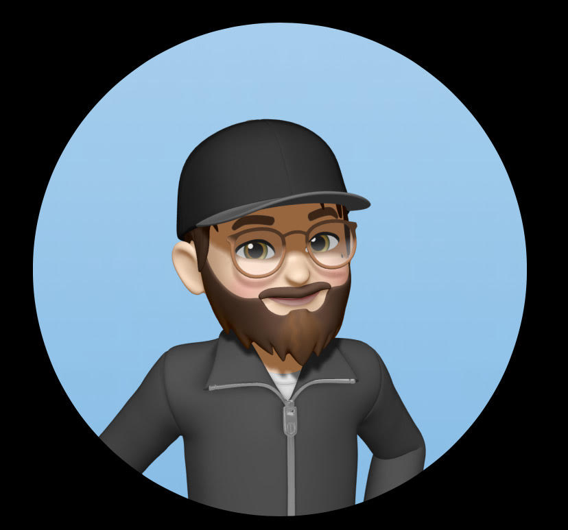

const profile = {
name: "Baptiste GARAY",
role: "Développeur & Chef de Projet SI",
location: "Vendargues, France",
passion: ["Code", "DIY", "3D Printing"],
status: "Prêt à innover"
};
Chef de Projet / Développeur / Passionné Tech
Solution pour faciliter la migration vers Windows 11 de PC non compatibles. Projet destiné aux parcs scolaires.
Voir sur ForgePipeline automatisé de nettoyage de données de scrutins de l’Assemblée nationale.
async function cleanData() {
const raw = await fetch('api');
const json = await raw.json();
return json.map(v => ({ id: v.id }));
}Application cartographique de suivi des incendies en France.
def init_map():
m = folium.Map(location=[46, 2])
folium.Marker([43.6, 3.8]).add_to(m)
return mApp mobile de suivi de portefeuille et d’analyse financière.
export default function Portfolio() {
useEffect(() => {
supabase.from('allocations')
}, [])
}MVP SCRUM/KANBAN. Ionic 1 et 4. UI avec graphiste.
@Component({
selector: 'app-home',
templateUrl: 'home.html'
})
export class HomePage {}Client Lourd JAVA :
new MainWindow().setVisible(true);Client Léger PHP :
$req = $pdo->query("SELECT *");def spawn_number(grid):
r, c = random.choice(empty)
grid[r][c] = 2